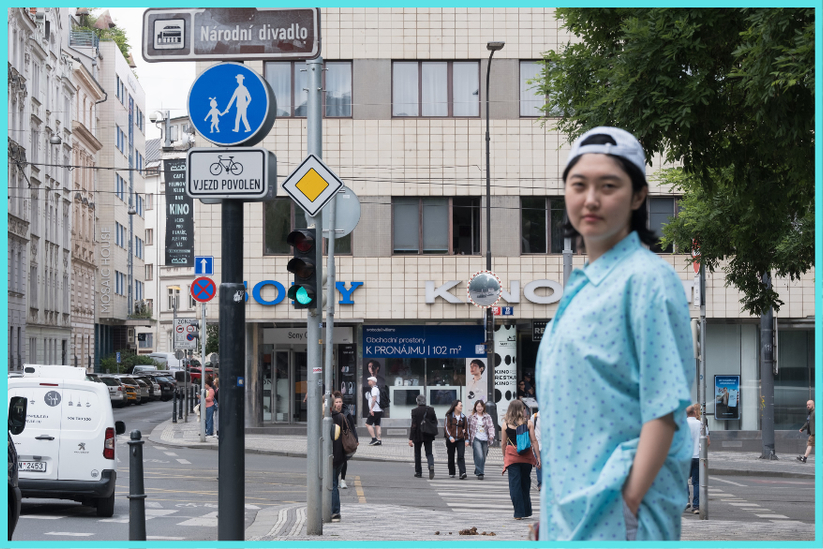

Mono no aware & l'argentique
Un oncle m'a passé un appareil argentique quand j'avais cinq ans, pour que je prenne une photo de sa famille. Les autres adultes doutaient de ma capacité à cadrer et à appuyer sur le bouton. Mon oncle a insisté. Le résultat était franchement pas mal.
J'aime la photographie pour deux raisons. L'une est une obsession pour le mono no aware — cette sensibilité à l'impermanence des choses. L'autre, c'est une phrase de ma grand-mère : « Même si une photo n'est pas satisfaisante maintenant, garde-la ; dans quelques années, elle le sera. »
Mes principales sources d'inspiration sont Noboru Shinoda et Corinne Day.

Jade Kang (亢玉) est une artiste autodidacte née en Chine et installée depuis huit ans dans les Hauts-de-Seine. Elle a choisi comme nom d'artiste le patronyme matrilinéaire de son arrière-grand-mère.
Ayant grandi dans une ville industrielle du nord-est de la Chine, froide et jalonnée de bâtiments à l'abandon, elle en garde un attachement profond aux paysages délaissés, vides et désaturés. Sa pratique artistique débute à l'âge de six ans avec la calligraphie au pinceau souple, et associe aujourd'hui la photographie, le dessin et l'écriture.
Diplômée d'une école de commerce, elle a travaillé sept ans en entreprise avant de se consacrer pleinement à la création depuis 2025, tout en poursuivant une formation en études des sociétés matriarcales.
« J'aime mieux croiser des œuvres à côté d'un canapé ou d'une table où l'on mange que dans une salle de musée. L'art et la vie ne se séparent pas. »